The Karvaan Project
When the room
lets go
Fifteen frames from nights built on prayer, pulse, and the kind of noise that stays with you
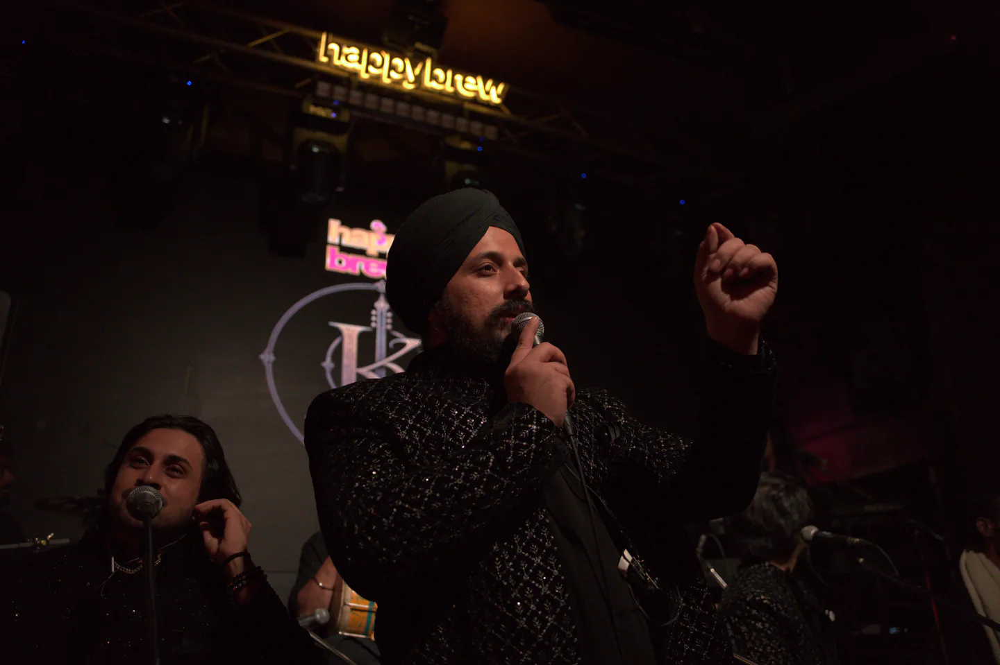
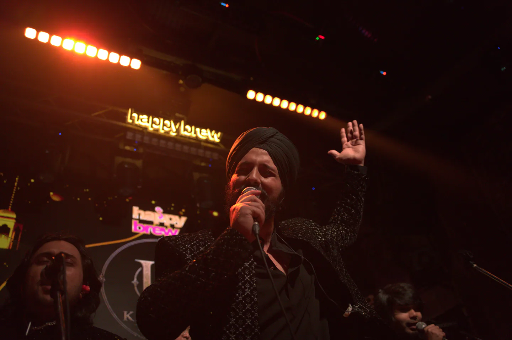
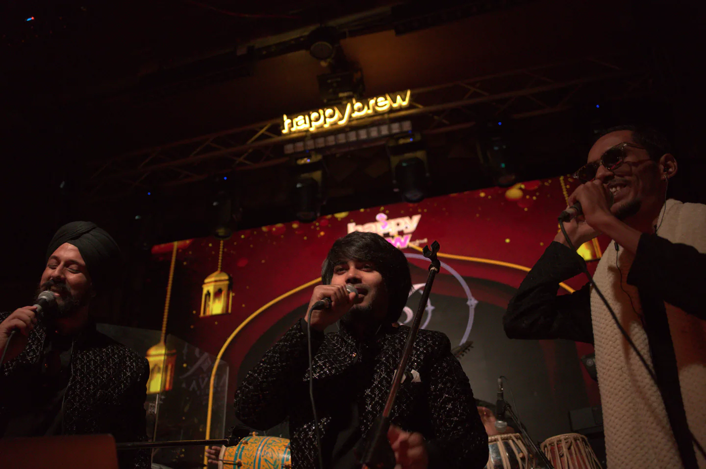
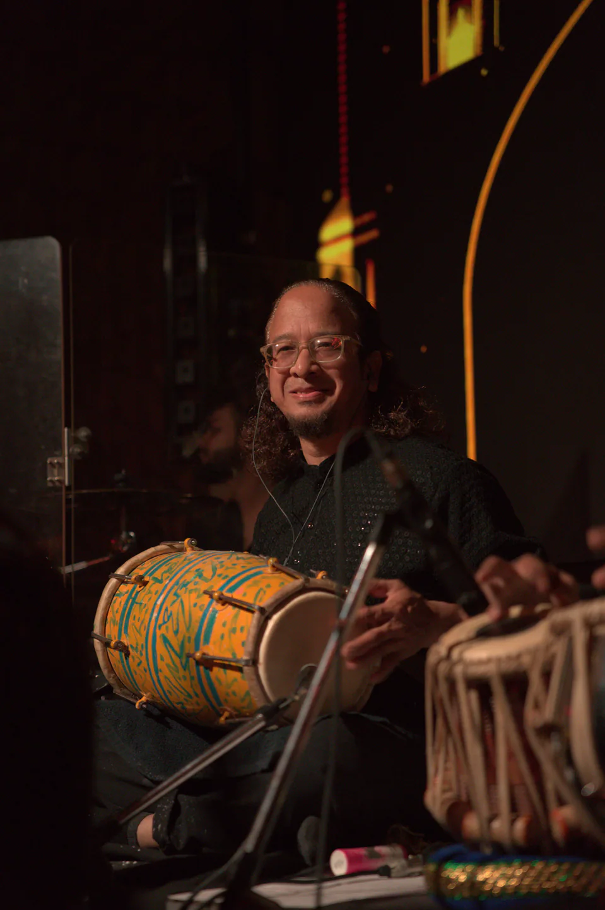
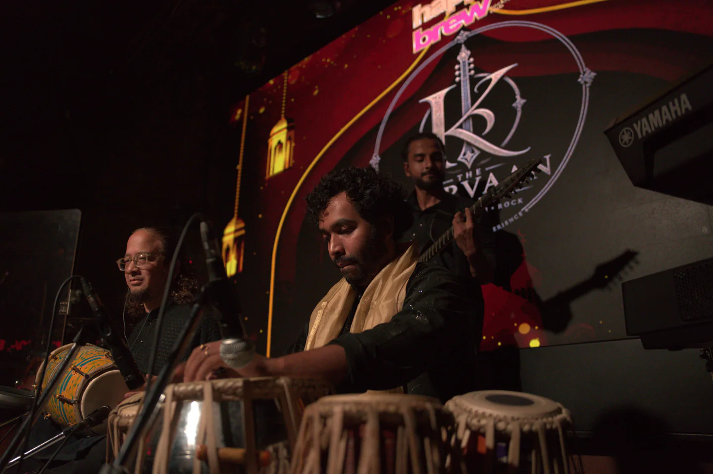
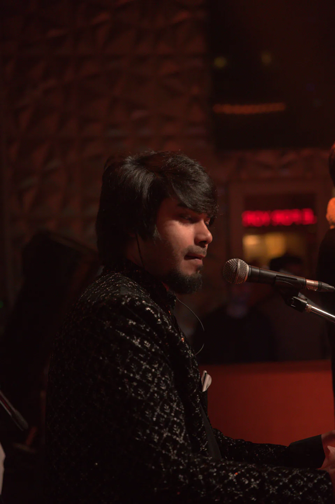
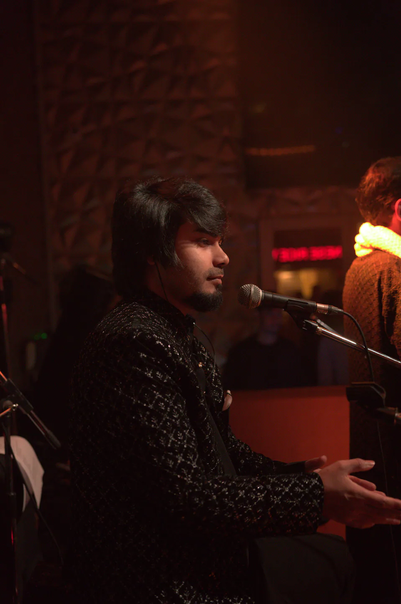
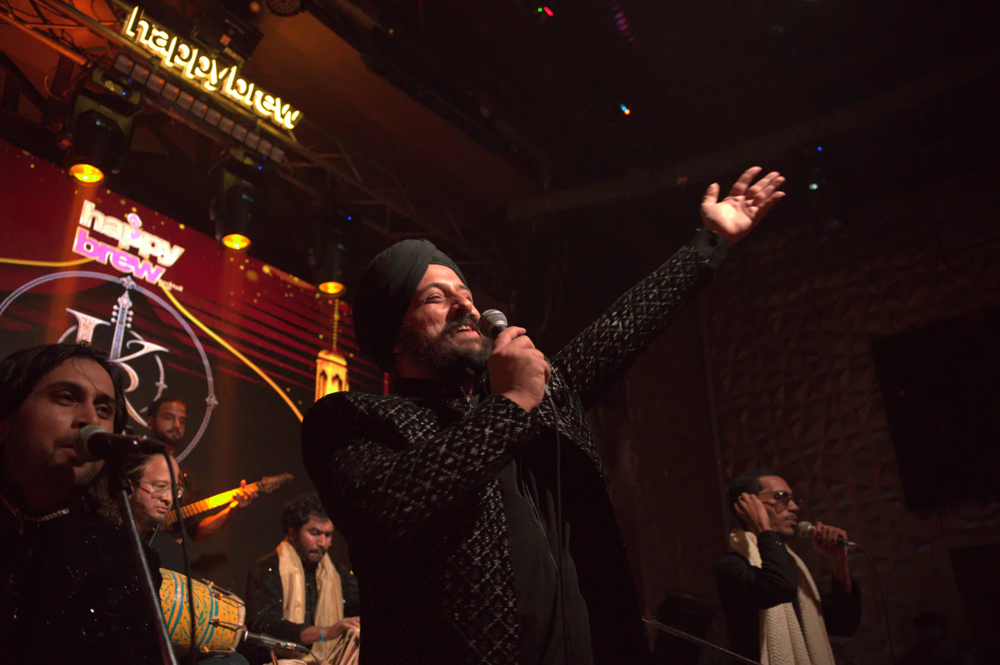
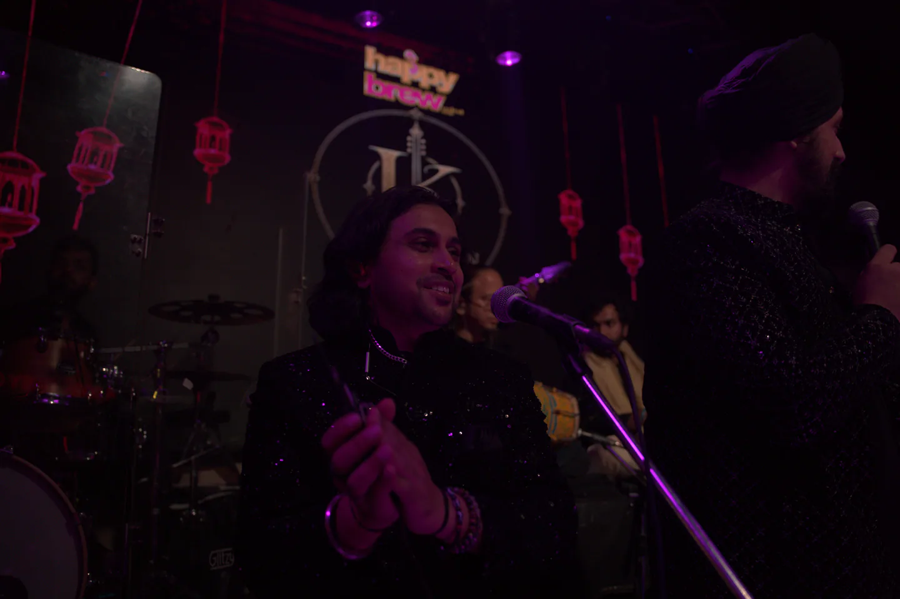
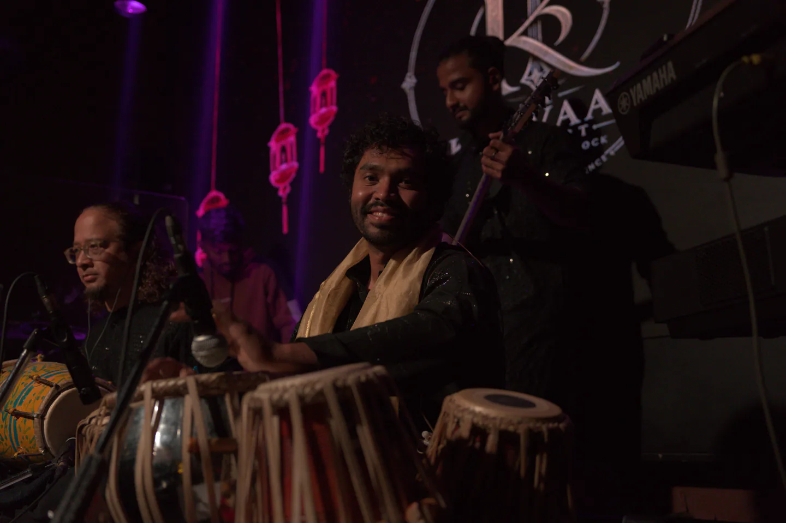

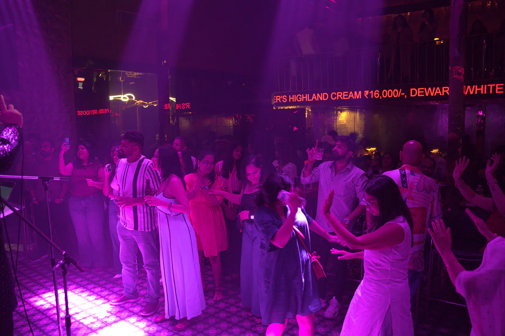
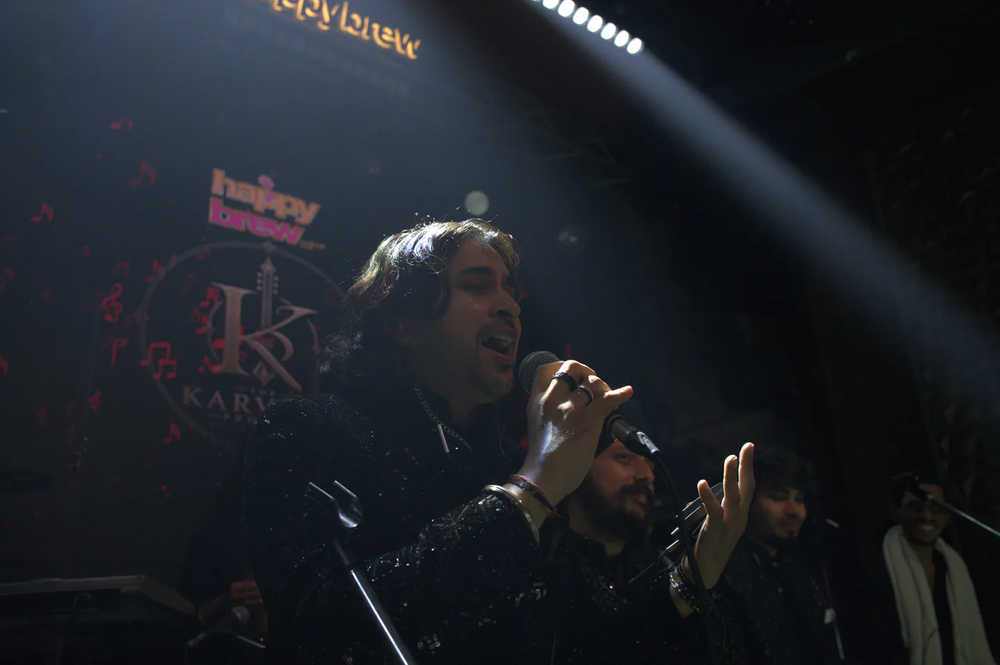
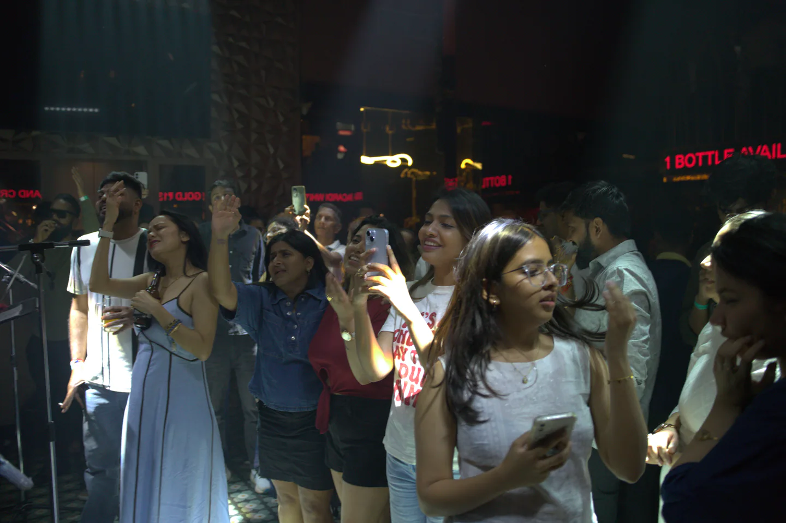
The next frame could be your night
Bring Karvaan to your stage